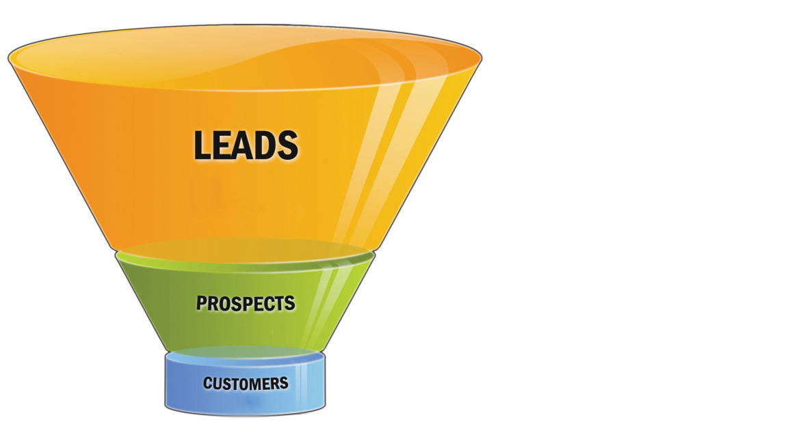

Imagine you decide to build a house from the ground up. After designing your ideal house, of course it would be nice if you could snap your fingers and get to the fun part: watching the finishing touches come together. But before the walls go up you have to make detailed plans and measurements, find your materials and negotiate with contractors, and lay the foundation. All these things require patience, time, and effort, but these steps are absolutely necessary for the project to move forward.
Planning and laying a foundation is a little like prospecting and qualifying. Finding leads (or people who might be prospects) is the most vital part of the selling process—you can’t make a sale without identifying the people to whom you’ll be selling.Charles M. Futrell, The ABC’s of Relationship Selling, 9th ed. (New York: McGraw-Hill Irwin, 2005). In other words, without prospecting, nothing else can happen. Yet, unlike laying a foundation, prospecting doesn’t happen just once; it’s a constant process. Businesses lose some customers every year for a variety of reasons: customers may no longer need the product or service, have the financial means to purchase the product or service, or live or do business in the area, or the business may no longer be open. So if you haven’t been building your prospect list, you won’t have new customers to replace the ones you lose. More than this, finding new prospects is the only way you can increase your sales and expand your business.
Think of the last time you went to the store to make a major purchase and you started by browsing the products. A salesperson probably approached you with the standard “Can I help you?” and you may have responded with the equally standard “No, thanks. I’m just looking.” Chances are good that the salesperson left you alone after that, very likely assuming you weren’t genuinely interested in making a purchase. Most people—salespeople and customers alike—are surprised to learn that over two-thirds of shoppers who give the “just looking” response end up purchasing the product within a week.Channel Intelligence, “2004 Channel Intelligence Consumer Buying Intent Survey Reveals Online Shopping Trends,” http://channelintelligence.vnewscenter.com/press.do?step=pkview&contentId=1184050872399&companyId=1123580114932 (accessed June 10, 2009). In other words, these customers are valuable leads, and all too often their business goes to a competitor.
Let’s say you are planning to buy a new refrigerator. That’s generally not the kind of purchase you make on the spot; you will probably go to a number of stores to compare products and prices first. If you tell the salesperson at the second store that you’re just looking, you may then go to a third store and decide you’re ready to buy. As a customer, if the vendors seem more or less equal, you will base your purchasing decision on price, product features, convenience, or a combination of these things. But imagine the salesperson at the second store who took the time to determine your specific needs, wrote down your contact information, and followed up with you. It’s very likely she would make a sale. Her products might be quite similar to her competitors’, but if she goes out of her way to provide you with a solution, you have a reason to buy from her over someone else.
Now let’s change hats. What does knowing this information mean for you as a salesperson? Most importantly, it means that you should never write off a lead until you are certain he can’t be qualified as a prospect. If you work in a showroom that sells only high-end cars like Lexus or BMW and a potential customer walks in wearing torn jeans and a T-shirt, you might be tempted to mentally disqualify him, assuming he won’t have the money to buy such expensive cars. But appearances are often misleading, and you won’t know whether or not your lead is actually qualified until you ask some specific, qualifying questions. When you realize that a lead is the only thing you can turn into a sale, you also realize just how valuable every lead is.
This is true for both B2C and B2B sales, wherein 30 percent to 50 percent of companies that see and respond to business-specific ads end up purchasing the product or service about which they’ve inquired within one or two years. This percentage is nothing to sneeze at. Yet, according to businesses, only about 1 percent to 5 percent of the ad-related inquiries they get from businesses translate into sales.John Coe, The Fundamentals of Business-to-Business Sales (New York: McGraw-Hill, 2003), 125. That’s a big gap. In other words, a lot of valuable leads can slip through your fingers if you don’t follow up and qualify them.
If you talked to a guidance counselor when you were applying to colleges, he probably told you to consider several and then apply to a number of schools (more than just two or three) even though you would only end up choosing one school in the end. This is because not all the schools that you apply to end up being a good fit. Sometimes you aren’t accepted, sometimes you are accepted but don’t get an ideal financial package, and sometimes as you learn more about a school you decide it isn’t the right one for you. Whatever the reason, you start out by considering many schools and generally end up deciding between a few.
The same can be said of the selling process. In fact, the process is often compared to a funnel. You start out with many leads, and after gathering more information, you come up with a smaller list of qualified prospects. As you communicate with these potential customers and work toward a solution, some will turn out to be more likely to buy than others. It’s common sense to assume that you will have more leads than you have buyers since not all leads turn into customers. The concept of the sales funnelAn illustration of the way the sales process begins with a large pool of prospects and ends with a more focused number of buyers. is a helpful way to visualize the process of finding and qualifying your customers and effectively illustrates the value of identifying a large pool of potential prospects. If you don’t bother to find more than a handful of leads, you limit your chances of ever closing a sale no matter how much effort you put into your sales presentation. It’s a common temptation that most people want the results without having to put in the foundational work of finding and contacting prospects.
Figure 7.4 Traditional Sales Funnel
But wait a minute, you might think, “Isn’t it hugely inefficient to spend time and effort communicating with so many prospects with the expectation that only a handful of those will turn out to be buyers?” This is also true, which is why qualifying and prioritizing your prospects is such an important part of the sales process. Technological tools like collaborative communities and other online resources can help you identify, qualify, and prioritize prospects. But you might wonder how do you decide which prospects you should invest your time in pursuing. To begin with, you should create a profile of your ideal buyer.Ron Hubsher, interview by Gerhard Gschwandtner, Daily Report, Sales Optimization Group, Selling Power, http://www.salesog.com/index.html (accessed June 9, 2009).
For instance, if your company sells expensive, high-quality kitchen utensils, the average college student won’t fit your ideal profile. While a young adult living away from home for the first time might have something in common with your ideal customer, the college student likely won’t have the budget or desire to go out and get the top-of-the-line products.
Your ideal customer profile will help you prioritize and target your efforts because it provides a model against which you can measure your leads to determine whether a potential customer is worth pursuing. If you focus your energy on prospecting and qualifying, which is learning more about your target prospects, you will save valuable time and resources, which you can then devote to giving your customers a more satisfying experience. Effective prospecting and qualifying empower you to invest in the opportunities that count.Ron Hubsher, “Turning the Sales Funnel Upside Down,” interview by Michelle Nichols, Savvy Selling, podcast audio program, BusinessWeek, July 13, 2007, http://www.businessweek.com/mediacenter/podcasts/savvy_selling/savvy_selling_07_13_07.htm (accessed June 9, 2009).
Prioritizing Leads
Understand how to use the sales funnel to maximize leads.
Now that you understand the concept of prospecting and why it’s important, you’ll find the next sections helpful as they will provide you with tools to help you find prospects and qualify prospects.
Describe the ideal customer for the following products or services: